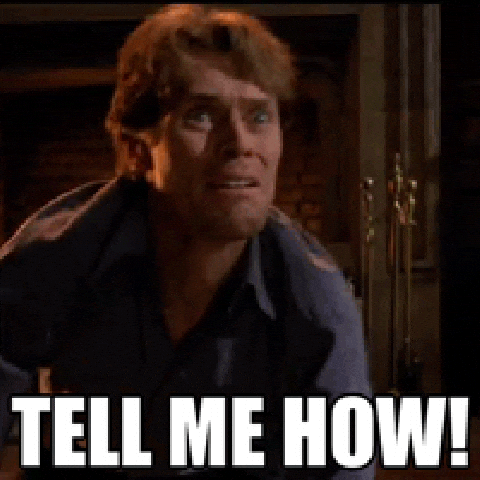

Description
This is a GIF image. It can move like a short animation.

File Type Info
GIF files are used for simple animations. They do not use many colors.
Why I Picked It
I picked this because GIFs are used a lot online for moving pictures, and it is really funny to me. This is how I am when I am struggling with baseball and I ask for help.
Source
GIF from Giphy.